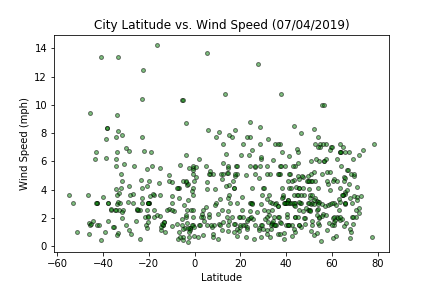

City Latitude vs Wind Speed

Differences in atmospheric pressure generate winds. At the Equator, warm
equatorial air rises higher into the atmosphere and migrates toward the poles. At the
same time, cooler, denser air moves over Earth’s surface toward the Equator to replace
the heated air. This causes movement of winds.
This web page analyzes how the
windspeed changes as you get closer to the equator. We first pulled the data from the
OpenWeatherMap API to assemble a dataset for over 500 cities. After assembling the
dataset, we used Matplotlib to plot Wind Speed vs. Latitude of these cities.
In our analysis, we found that cities, with latitude closer to the equator, are less
windy. Wind speed is recorded as less than 8 mps on average for most cities closer to
the equator.